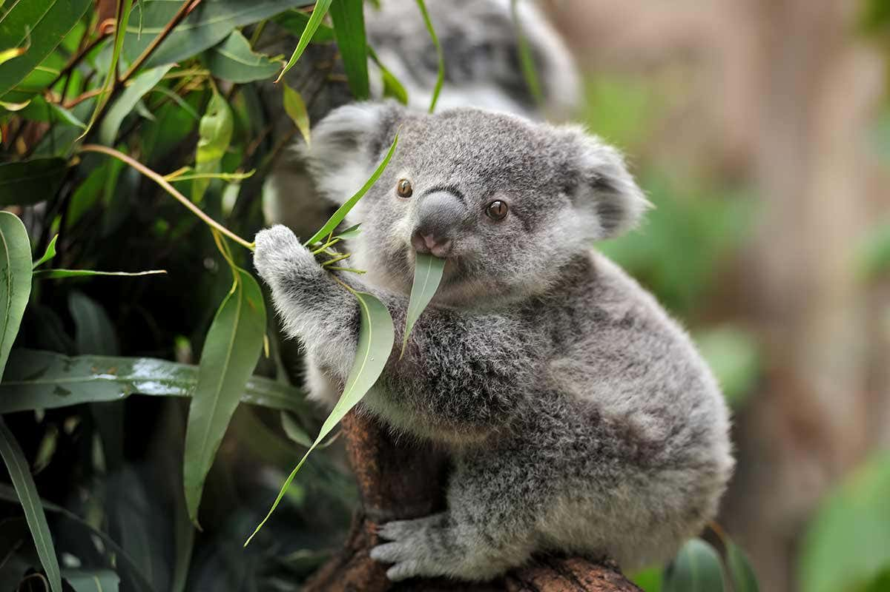
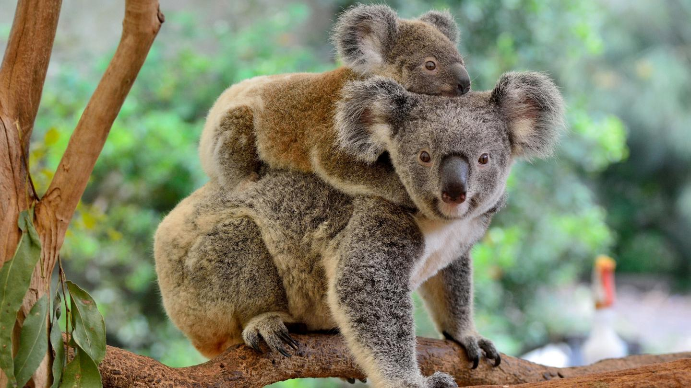

Koalas primarily eat eucalyptus leaves.
Koalas have a unique digestive system that can break down these leaves.
Baby koalas are called joeys.
Joeys are born without fur.
You can find more about Koalas by visiting National Geographic.
Click here to visit our page on Baby Koalas.